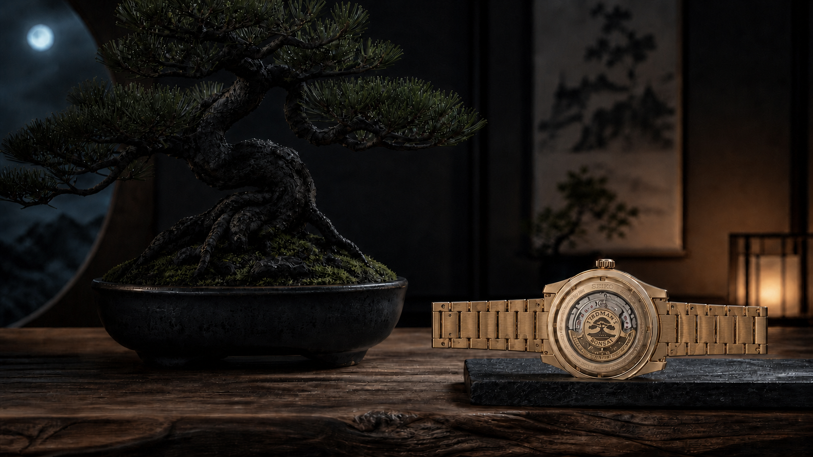

分かりやすく一言で言うと
セイコー プレザージュのHCC011Jは、TRADMAN'S BONSAIとデザインを考案した国内600本の限定モデルです。黒松の盆栽をテーマにした松葉色の文字盤と、金色のアクセントが特徴。2026年9月5日発売、希望小売価格は税込176,000円です。
まず確認したい発売・価格・限定数
国内モデルの型番はHCC011Jです。セイコー公式では、セイコーグローバルブランドコアショップ専用モデルとして案内されています。限定品のため、販売状況は変わります。この記事は価格や在庫を保証するものではなく、購入時には必ずセイコー公式の商品ページと正規取扱店を確認してください。
黒松と松葉色をどう表現したのか
このモデルの着想源は、月明かりに照らされた黒松の盆栽です。文字盤には、長い歳月を重ねた松の古木の表情をモチーフにした型打ち模様を採用。色には、伝統色として知られる松葉色を使っています。
セイコーの説明では、月の輝きをケースとブレスレットのゴールドカラーで表現しています。落ち着いた深い緑と金色の組み合わせなので、盆栽をそのまま文字盤へ描くのではなく、素材と色で景色を思わせるつくりです。

機械式時計としての仕様
ムーブメントは、手巻きにも対応する自動巻きのキャリバー6R51です。最大巻上時の持続時間は約72時間。ケースはステンレススチールで、ケース径は38.0mm、厚さは12.9mm、重さは135gです。
ガラスはデュアルカーブサファイアで、内面無反射コーティングを備えます。防水は10気圧、耐磁性能も案内されています。裏ぶたはシースルー・スクリューバック仕様で、限定モデルの表記とシリアルナンバーが入ります。
付属品と替えストラップ
時計本体に加えて、カーフの替えストラップが付属します。ストラップ裏側の先端には、幸運の象徴とされる三鈷松の葉を型押しで表現。桐箱の特製ボックス、オリジナルのウオッチクロス、メッセージカードも同梱される予定です。
ブレスレットのまま普段使いし、気分や服装に合わせて革ストラップへ替えるという楽しみ方ができます。付属品は限定品ならではの魅力ですが、時計の仕様や保証とは別に、店頭で内容を確認しておくと安心です。
購入前に確認したいこと
- 型番が国内モデルのHCC011Jであること
- 発売日・在庫・販売方法は正規取扱店で確認すること
- 38.0mmのケースサイズと135gの重さが自分の腕に合うか見ること
- 替えストラップ、保証、修理対応を確認すること
- 海外向けHCC009とは型番・限定数・価格が異なるため、混ぜて比較しないこと
ろぶーの結論
HCC011Jは、盆栽のかたちを前面に出す時計というより、黒松の深い緑、古木の質感、月明かりの金色を、腕元に小さくまとめたモデルです。機械式時計としては、約72時間の持続時間、10気圧防水、38.0mmという日常で使いやすそうな仕様も気になります。
国内600本の限定モデルなので、気になる人は焦って決めるのではなく、公式情報と実物を確認してから選びたい一本です。
公式出典
価格、発売日、仕様は2026年8月28日時点で公式情報を確認しています。販売状況、在庫、修理・保証の条件は変わる場合があります。